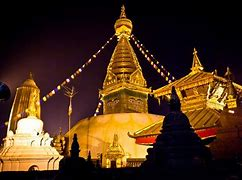

Kathmandu is the capital and largest city of Nepal, with a population of around 1 million. The city stands at an elevation of approximately 1,400 metres (4,600 feet) above sea level in the bowl-shaped Kathmandu Valley in central Nepal. The valley was historically called the "Nepal Mandala" and has been the home of the Newar people, a cosmopolitan urban civilization in the Himalayan foothills. The city was the royal capital of the Kingdom of Nepal and hosts palaces, mansions and gardens of the Nepalese aristocracy. It has been home to the headquarters of the South Asian Association for Regional Cooperation (SAARC) since 1985. Today, it is the seat of government of the Nepalese republic, established in 2008, and is part of the Bagmati Province. Kathmandu is and has been for many years the centre of Nepal's history, art, culture, and economy. It has a multi-ethnic population within a Hindu and Buddhist majority. Religious and cultural festivities form a major part of the lives of people residing in Kathmandu. Tourism is an important part of the economy in the city. In 2013, Kathmandu was ranked third among the top ten upcoming travel destinations in the world by TripAdvisor, and ranked first in Asia.
The city is considered the gateway to the Nepalese Himalayas and is home to several World Heritage Sites: the Durbar Square, Swayambhunath, Boudhanath and Pashupatinath. Kathmandu valley is growing at 4 percentage per year according to the World Bank in 2010, making it one of the fastest-growing metropolitan areas in South Asia, and the first region in Nepal to face the unprecedented challenges of rapid urbanization and modernization at a metropolitan scale. Historic areas of Kathmandu were severely damaged by a 7.8 magnitude earthquake in April 2015. Some of the buildings have been restored while some remain in the process of reconstruction.
Paragliding

Paragliding is the sporting and serious experience game of flying paragliders: lightweight, free-flying, foot-dispatched lightweight plane airplane with no unbending essential design. The pilot sits in an outfit or lies prostrate in a case like 'speed pack' suspended under a texture wing. Wing shape is kept up with by the suspension lines, the strain of air entering vents toward the front of the wing, and the streamlined powers of the air streaming over the outside. Notwithstanding not utilizing a motor, paraglider flights can last numerous hours and cover a huge number of kilometers, however trips of one to two hours and covering around several kilometers are more the standard. By capable abuse of wellsprings of lift, the pilot might acquire tallness, frequently moving to elevations of a couple thousand meters.
chitwan national park

Chitwan National Park is the primary public park in Nepal. It was set up in 1973 and conceded the situation with a World Heritage Site in 1984. It covers a space of 952.63 km² and is situated in the subtropical Inner Terai swamps of south-focal Nepal in the regions of Nawalpur, Parsa, Chitwan and Makwanpur. In elevation it goes from around 100 m in the stream valleys to 815 m in the Churia Hills.Since the finish of the nineteenth century Chitwan – Heart of the Jungle – used to be a most loved hunting ground for Nepal's decision class during the cool winter seasons. Until the 1950s, the excursion from Kathmandu to Nepal's south was laborious as the space must be reached by foot and required half a month. Agreeable camps were set up for the primitive major game trackers and their company, where they remained for a very long time shooting many tigers, rhinoceroses, panthers and sloth bears.
Bungee jumping

Bungee bouncing , additionally spelled bungy hopping, is an action that affects an individual hopping from an incredible tallness while associated with a huge flexible rope. The take off platform is normally raised on a tall construction like a structure or crane, an extension across a profound gorge, or on a characteristic geographic component like a precipice. It is likewise conceivable to hop from a kind of airplane that can float over the ground, for example, a tourist balloon or helicopter. The rush comes from the free-falling and the bounce back. At the point when the individual leaps, the line extends and the jumper flies upwards again as the string forces, and keeps on swaying here and there until all the active energy is scattered.
Pokhara

Pokhara is a metropolitan city in Nepal, which fills in as the capital of Gandaki Province. It is the country's biggest metropolitan city as far as region and second-biggest as far as populace. The city additionally fills in as the base camp of Kaski District. Pokhara is found 200 kilometers west of the capital, Kathmandu. The city is on the shore of Phewa Lake, and sits at a rise of roughly 822m. The Annapurna Range, with three out of the ten most elevated tops on the planet—Dhaulagiri, Annapurna I and Manaslu—is inside 15–35 mi of the valley.Pokhara is a metropolitan city in Nepal, which fills in as the capital of Gandaki Province. It is the country's biggest metropolitan city as far as region and second-biggest as far as populace. The city additionally fills in as the central command of Kaski District. Pokhara is found 200 kilometers (120 miles) west of the capital, Kathmandu. The city is on the shore of Phewa Lake, and sits at a rise of around 822m. The Annapurna Range, with three out of the ten most elevated tops on the planet—Dhaulagiri, Annapurna I and Manaslu—is inside 15–35 mi (24–56 km) of the valley. Pokhara is viewed as the travel industry capital of Nepal, being a base for adventurers undertaking the Annapurna Circuit through the Annapurna Conservation Area district of the Annapurna ranges in the Himalayas. The city is likewise home to large numbers of the tip top Gurkha warriors, troopers local to South Asia of Nepalese identity selected for the British Army, Nepalese Army, Indian Army, Gurkha Contingent Singapore, Gurkha Reserve Unit Brunei, UN peacekeeping powers and in disaster areas all throughout the planet.
Lumbini

Lumbinī is a Buddhist pilgrimage site in the Rupandehi District of Lumbini Province in Nepal. It is the place where, according to Buddhist tradition, Queen Mahamayadevi gave birth to Siddhartha Gautama at around 563 BCE. Gautama, who achieved Enlightenment some time around 528 BCE, became the Buddha and founded Buddhism. Lumbini is one of many magnets for pilgrimage that sprang up in places pivotal to the life of the Buddha.In the Buddha's time, Lumbini was situated in east of Kapilavastu and southwest Devadaha of Shakya, an oligarchic republic. According to Buddhist tradition, it was there, that the Buddha was born. A pillar discovered at Rupandehi in 1896 is believed to mark the spot of Ashoka's visit to Lumbini. The site was not known as Lumbini before the pillar was discovered. The translation of Inscription reads: "When King Devanampriya Priyadarsin had been anointed twenty years, he came himself and worshipped (this spot) because the Buddha Shakyamuni was born here. (He) both caused to be made a stone bearing a horse (?) and caused a stone pillar to be set up, (in order to show) that the Blessed One was born here. (He) made the village of Lummini free of taxes, and paying (only) an eighth share (of the produce)." The park was previously known as Rupandehi, 2 mi (2 mi (3.2 km)) north of Bhagavanpura.The Sutta Nipáta (vs. 683) states that the Buddha was born in a village of the Sákyans in the Lumbineyya Janapada. The Buddha stayed in Lumbinívana during his visit to Devadaha and there preached the Devadaha Sutta.
Swayambhunath Temple
Swayambhu is an ancient religious complex atop a hill in the Kathmandu Valley, west of Kathmandu city. The Tibetan name for the site means 'Sublime Trees', for the many varieties of trees found on the hill. However, Shing.kun may be a corruption of the local Nepal Bhasa name for the complex, Swayambhu, meaning 'self-sprung'. For the Buddhist Newars, in whose mythological history and origin myth as well as day-to-day religious practice Swayambhunath occupies a central position, it is probably the most sacred among Buddhist pilgrimage sites. For Tibetans and followers of Tibetan Buddhism, it is second only to Boudha.Swayambhunath Stupa. Find peace and prayers on the little hillock of Swaymbhunath in the northwest of Kathmandu Valley. Visitors for whom the name was a tongue twister have called it "Monkey Temple" from the 1970s. Swayambhu, overlooks most parts of the valley giving visitors a panoramic view of the city.Swayambhunath Stupa, Kathmandu, Nepal. A golden spire crowning a conical wooded hill, Swayambhunath Stupa is the most ancient and enigmatic of all the holy shrines in Kathmandu valley. Its lofty white dome and glittering golden spire are visible for many miles and from all sides of the valley.Swayambhunath stupa is the oldest stupa in Kathmandu and one of the oldest religious sites in Nepal. The historic landmark has been a listed UNESCO World Heritage Site since 1979. Swayambhunath, or the Monkey temple as it is often referred to, is located on the top of a hill west of Kathmandu, and consists of a main (huge) stupa surrounded by Hindu and Buddhist temples and monuments of great cultural and historical importance. Swayambhunath is achingly beautiful and absolutely fascinating. Besides, the site also offers an amazing panoramic view of the capital city. It is definitely a must-see for every traveler landing in Kathmandu.
Pashupatinath Temple

The main temple of Pashupatinath is a building with a bunk roof and a golden spire. It is located on the Western bank of Bagmati and is considered a masterpiece of Hindu architecture. It is a cubic construction with four main doors, all covered with silver sheets. The two-storied roof is made from copper and is covered with gold.The Pashupatinath Temple is a famous and sacred Hindu temple complex that is located on the banks of the Bagmati River, approximately 5 km north-east of Kathmandu in the eastern part of Kathmandu Valley, the capital of Nepal. The temple serves as the seat of Pashupatinath. This temple complex was inscribed on the UNESCO World Heritage Sites's list in 1979. This "extensive Hindu temple precinct" is a "sprawling collection of temples, ashrams, images and inscriptions raised over the centuries along the banks of the sacred Bagmati river" and is included as one of the seven monument groups in UNESCO's designation of Kathmandu Valley Visit Pashupatinath for an unmatched mix of religious, cultural and spiritual experiences. Located 3 km northwest of Kathmandu on the banks of the Bagmati River, the temple area also includes Deupatan, Jaya Bageshori, Gaurighat (Holy Bath), Kutumbahal, Gaushala, Pingalasthan and Sleshmantak forest. There are around 492 temples, 15 Shivalayas (shrines of Lord Shiva) and 12 Jyotirlinga (phallic shrines) to explore. Pashupatinath Temple is one of the eight UNESCO Cultural Heritage Sites of the Kathmandu Valley